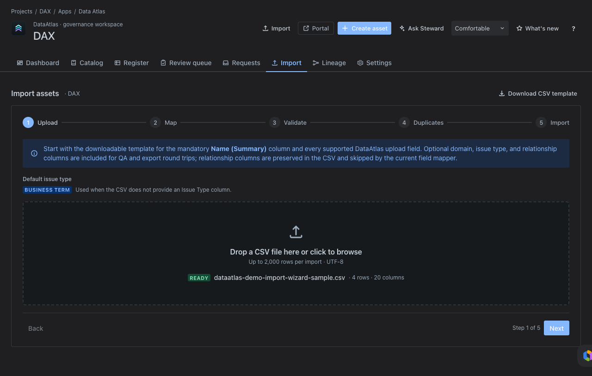
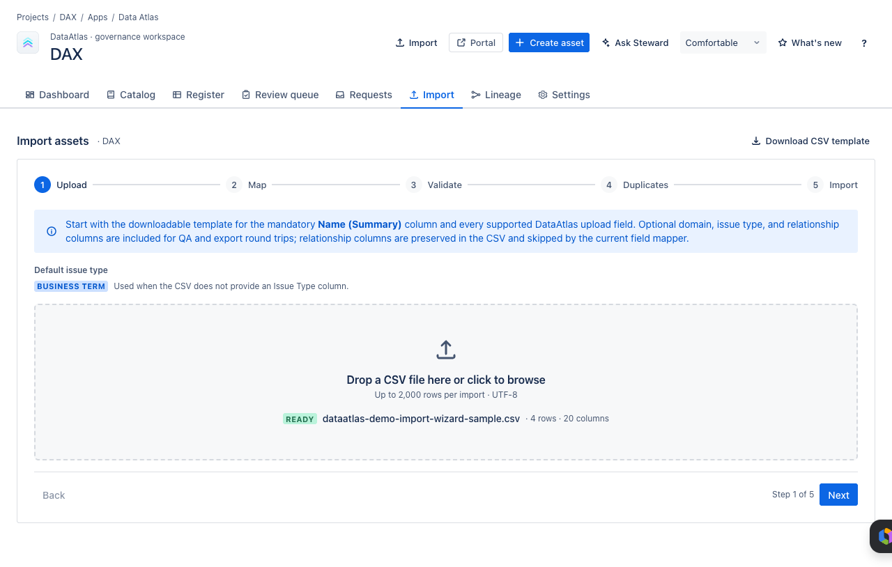
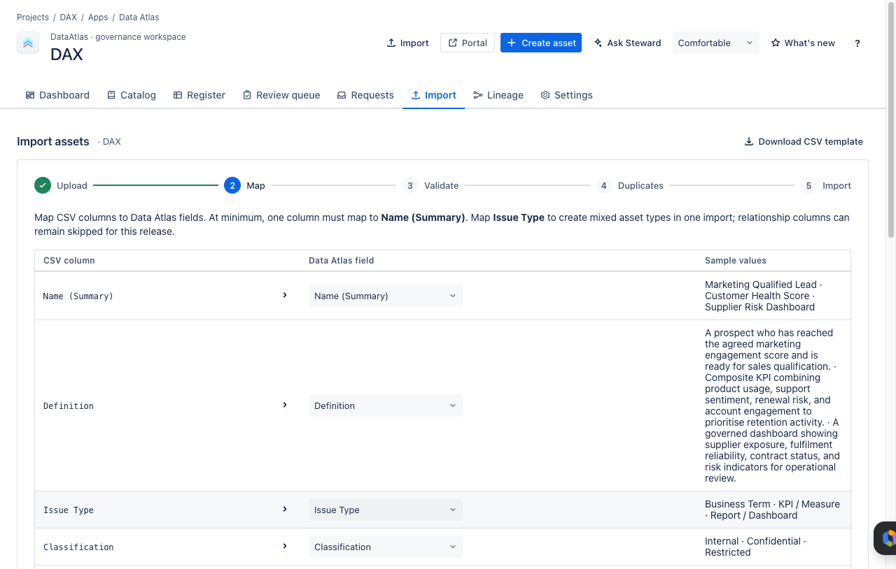
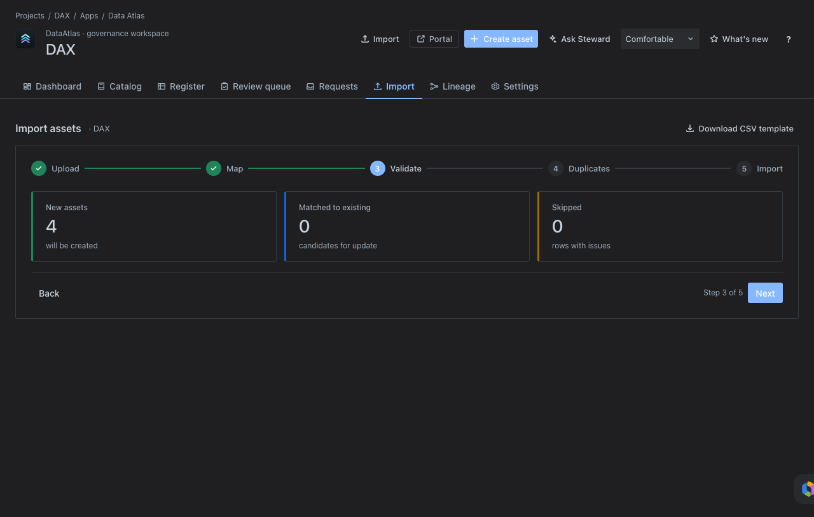
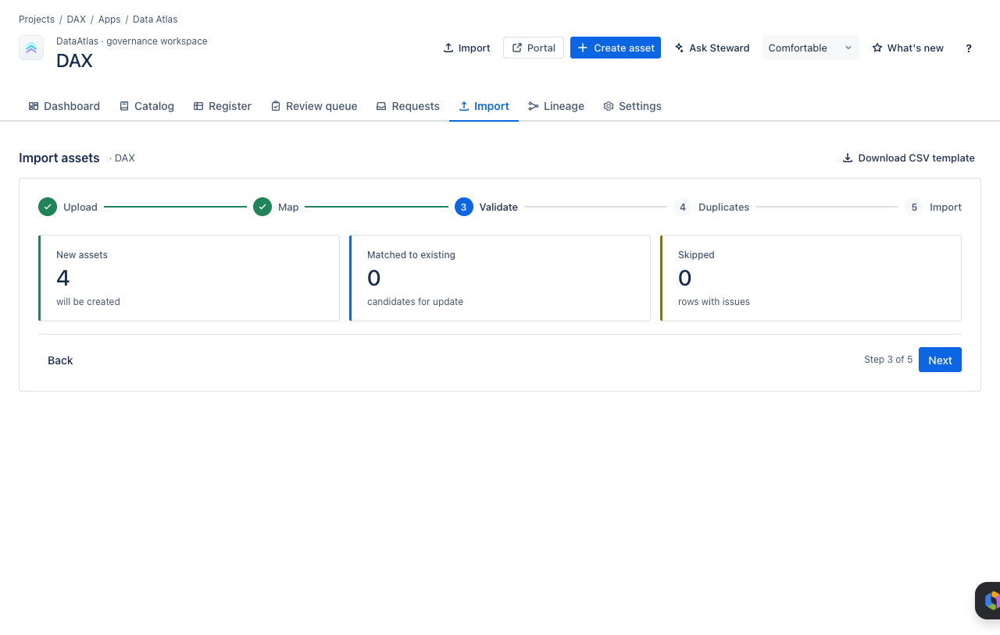
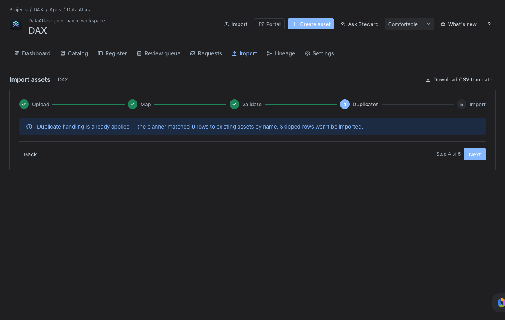
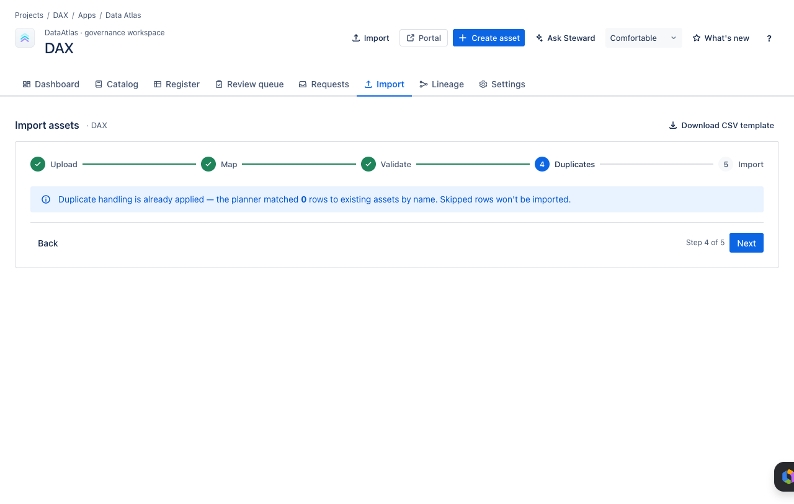
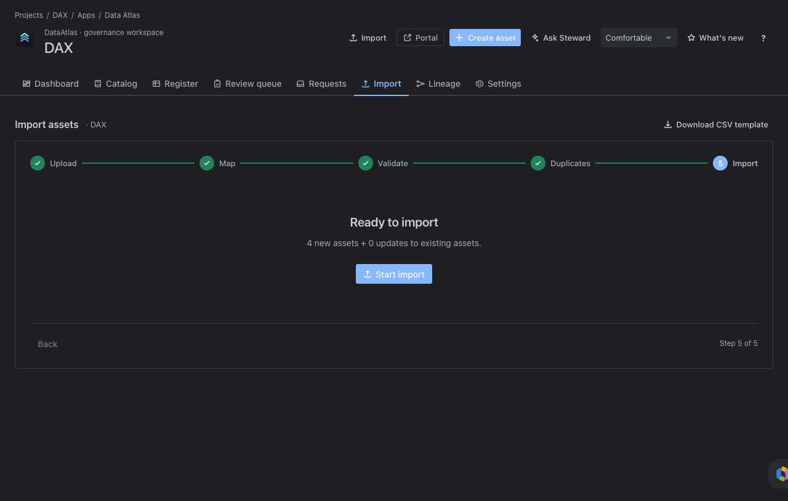
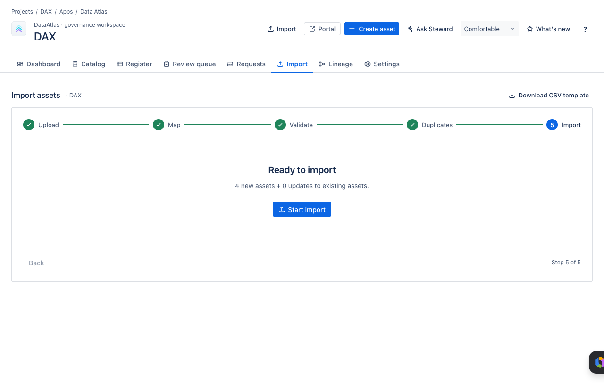

User Guide
How to browse, search, review, request, import, and trace governed data assets inside Data Atlas.
01Core Concepts
Data Atlas is a governed data catalogue inside Jira. Everything in Data Atlas is a Jira work item — this means every asset has full Jira history, ownership fields, and workflow lifecycle built in.
02Browse the Catalogue
Open Catalog to explore governed assets as a glossary or data dictionary. Use it to answer business questions:
- What does this term mean?
- Which KPIs are governed?
- Which reports are catalogued?
- Which systems or flows support a business area?


03Search the Register
Open Register when you need the complete operational view. Search by name, Jira key, or definition, then filter by type, business owner, classification, domain, platform, or status.
- Search for the asset by business name or Jira key.
- Apply filters to narrow by domain, platform, classification, or owner.
- Open the asset detail drawer.
- Review metadata, ownership, status, and relationships.


04Review Governance Health
Open Dashboard to understand the current health of the Data Atlas project. The dashboard surfaces gaps and activity in one place so stewards know where to act.
- Assets missing business owners
- Assets missing classification
- Overdue or missing review dates
- Recently modified assets
- New stewardship activity


05Work the Review Queue
Open Review queue when acting as a data steward. The queue focuses attention on assets due for governance review and assets with incomplete stewardship metadata.
- Assign or confirm the business owner.
- Assign or confirm the data steward.
- Confirm the classification and sensitivity.
- Confirm review date and cadence.
- Update definitions or relationships where needed.


06Raise a Governance Request
Use the Portal link when Data Atlas is connected to a Jira Service Management project. The branded portal supports four request types:
- Request a new measure or metric
- Request a new business term or data definition
- Request a new report or dashboard
- Propose a change to an existing asset

Tip: If your organisation has an existing service portal, Data Atlas request types may already be available there — check with your Jira admin before creating a new portal request.
07Import Assets
Open Import to onboard assets in bulk using a CSV template. Import updates changed records and creates new ones — it will never delete records absent from the file.
- Download the CSV template from Import → Download CSV template.
- Populate one row per asset — include issue type, name, definition, classification, domain, platform, and relationship columns where available.
- Upload the completed CSV.
- Map CSV columns to Data Atlas fields.
- Validate the import and review any errors.
- Check and resolve duplicate matches.
- Execute the import.


Step-by-step import screens:










08Explore Lineage
Open Lineage to see how governed assets relate to each other. Use the lineage graph to answer questions about upstream sources, downstream consumers, and governing policies.
- Which source systems feed a KPI?
- Which reports consume this data element?
- Which policy governs this asset?
- Which assets pass through an integration flow?


09Ask Steward (Rovo)
Use Ask Steward for guided questions about governance health, ownership gaps, classification gaps, overdue reviews, and next actions. Rovo is an assistant over the Jira-backed catalogue — it does not replace steward approval or governance decisions.
Example prompts:
Known limitation: Rovo depends on the Forge action endpoints being healthy in the tenant. If Ask Steward is unresponsive, contact your Jira admin to verify the Data Atlas Rovo actions are enabled.
Ready to set up Data Atlas?
Find it on the Atlassian Marketplace and deploy into an existing Jira project.